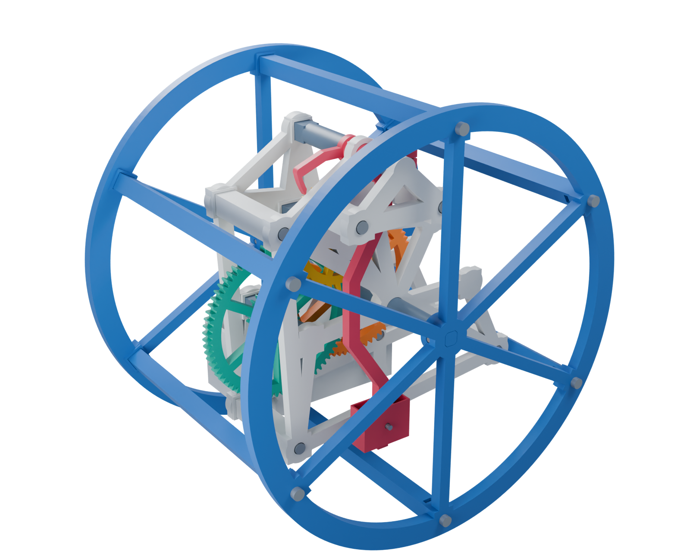
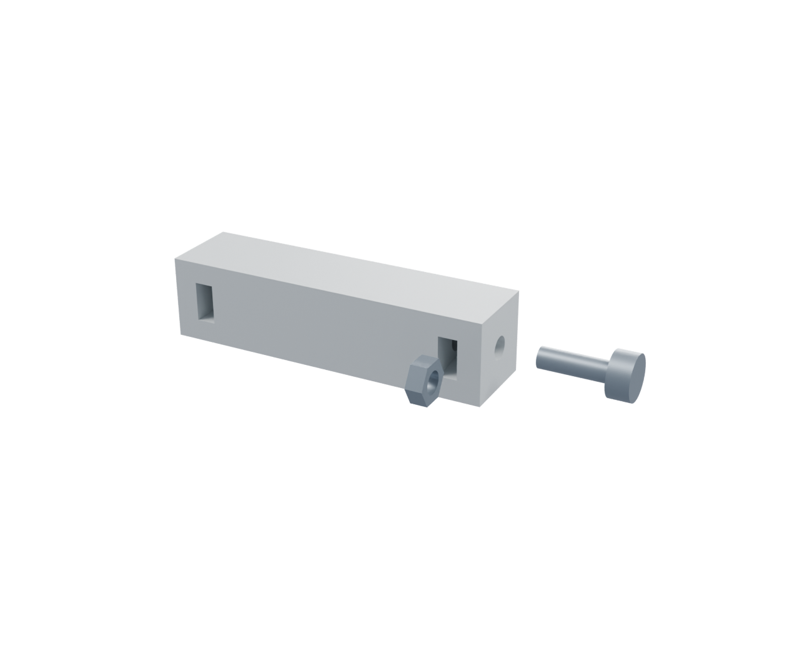
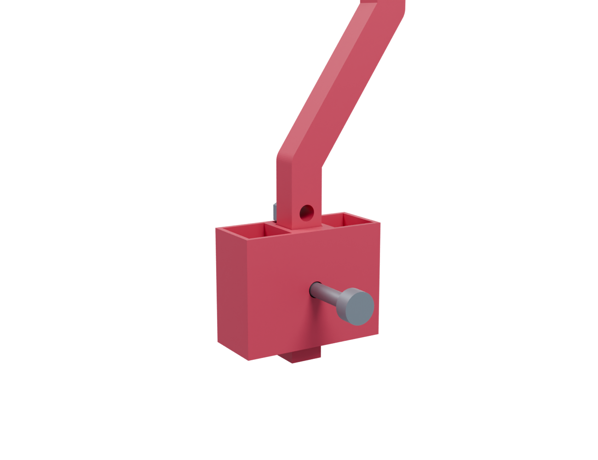
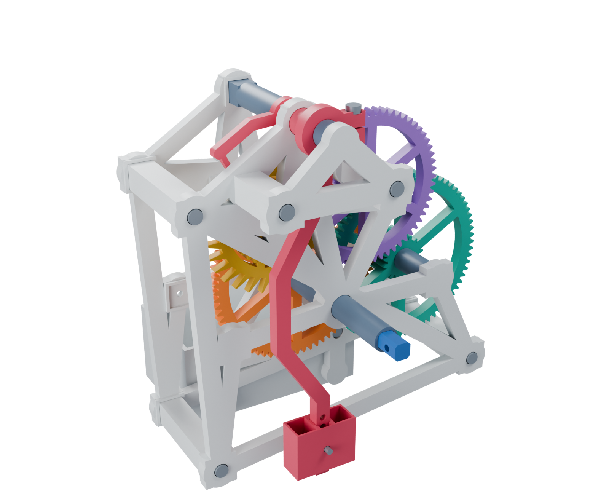
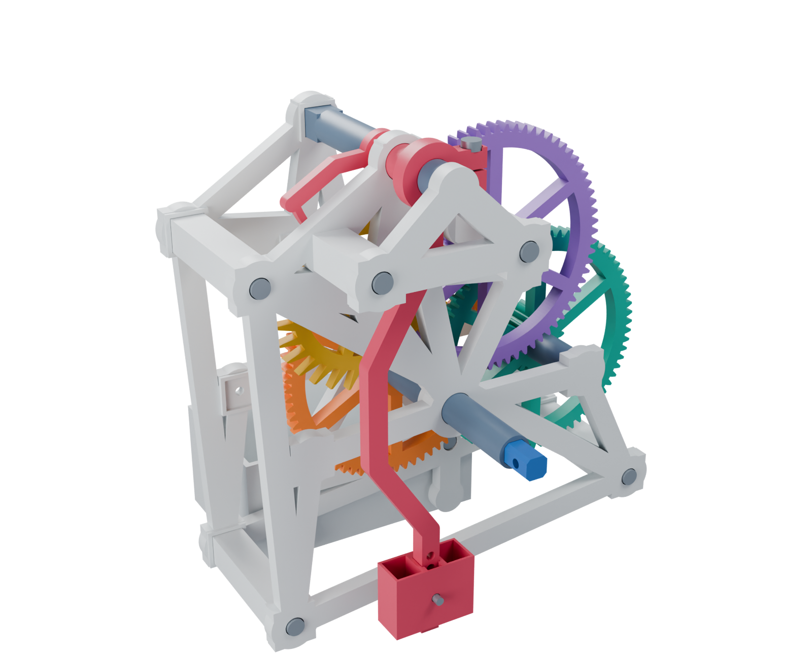

R3: shared frames for 16:1, 32:1 and 64:1. Geometrically checked; not yet physically tested.
Open the complete 17-page illustrated build guide
Print the 1:1 main-axle identification sheet (also page 6 of the guide). A4 landscape, 100% / Actual size, with Fit / Shrink disabled. Check the 50 mm bar.
Spacer order and wheel direction drawings: 16x / 32x / 64x (guide pages 7-9). Each sheet shows the pivot map, spacer lengths and front/rear orientation, including the anchor.
Rear thrust correction: print one new 38_rear_journal_thrust_collar.stl. Its 12.4 mm round bore surrounds journal 36; its 6 mm length fills the gap between rear-frame collar 05 and washer 35. Existing corrected prints can be reused.
Pivot correction: 10.5 mm pivot feet, 54 mm frame posts, 186 mm axle and 76 mm rear journal. Existing R3 gears, frames, anchor bridge and bridge posts remain compatible.
Print lists: 16x / 32x / 64x. Begin with the nut-post and seat coupons, then the 16x mechanism. Full design notes.




